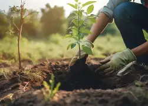

Our Programmes
GreenPath runs three core programmes, each designed to build a more sustainable community.

Tree Planting
We organise regular tree-planting events in local parks, schoolyards, and open spaces, restoring green cover and providing shade and habitat for local wildlife. Volunteers of all ages and experience levels are welcome.

Recycling Education
Our recycling workshops teach households and school learners how to reduce, reuse, and recycle waste effectively. We partner with local schools to run age-appropriate sustainability lessons throughout the year.

Community Clean-Ups
We bring volunteers together on weekends to clean up local parks, rivers, and public spaces, removing litter and raising awareness of responsible waste disposal.
Why These Programmes Matter
Environmental challenges affect the quality of the places where people live, learn, and work. Our programmes combine education with practical action so that participants can contribute directly to cleaner and greener communities.
- Improve the appearance and care of shared public spaces.
- Encourage responsible waste management habits.
- Increase environmental awareness among learners and residents.
- Create opportunities for volunteers to make a practical contribution.
Get Involved in Any Programme
Interested in volunteering or partnering with us on one of these programmes?
Send an EnquiryWhat To Expect
Programme activities may include short environmental briefings, practical tasks, teamwork, and a discussion about how participants can continue supporting their community. Specific activities and schedules may vary depending on the project and location.